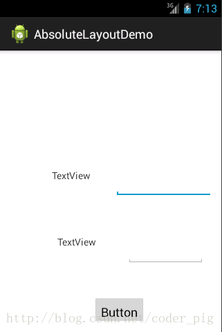
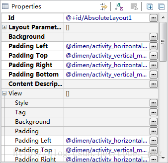
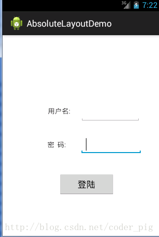

はじめに
これまでに、Androidの5大レイアウトを紹介しました。この節では、6番目のレイアウトであるAbsoluteLayout（絶対レイアウト）について説明します。最後にこのレイアウトを取り上げたのは、絶対レイアウトは基本的に使用することがないからです。もちろん、この記事をスキップしても構いません。しかし、知識を増やしたいプログラマーであれば、このAbsoluteLayoutレイアウトについて知っておいても良いでしょう。Javaを学んだことのある方の多くはご存知だと思いますが、Java Swing（Springではありません）ではこの絶対レイアウトを使ったことがあるでしょう。しかし、Androidでこれをあまり使わない理由は、開発するアプリを多くの機種に適合させる必要があるからです。この絶対レイアウトを使うと、4インチのスマートフォンでは正常に表示されるかもしれませんが、5インチのスマートフォンに変えると、ずれや変形が発生する可能性があります。そのため、使用はお勧めしません。もちろん、コードが書けなくてもAndroidを試してみたい場合は、レイアウトを作成するときにADTを使って必要なコンポーネントを画面上にドラッグ＆ドロップできます。このAbsoluteLayoutは、X,Y座標を直接使ってコンポーネントのActivity内の位置を制御します！なお、単位はdpです！
1. 4つの制御属性（単位はすべてdp）：
① サイズの制御： android:layout_width:コンポーネントの幅android:layout_height:コンポーネントの高さ② 位置の制御： android:layout_x:コンポーネントのX座標を設定android:layout_y:コンポーネントのY座標を設定
2. 使用例：
簡単なログイン画面です。すべてADT上で直接ドラッグ＆ドロップして作成した画面で、コードは載せません：
① まずAbsoluteLayout（絶対レイアウト）に設定します：

② 左側から2つのTextViewとEditText、および1つのボタンをインターフェースにドラッグ＆ドロップします。見た目が良くなるまで、あちこちドラッグして調整します。

ドラッグ＆ドロップしても、結局このダサい見た目のままです。おそらくADTの問題でしょう。次にできることは： ①コード内で座標を修正し、見た目が良くなるまで調整する ②もちろん、右側で直接座標を設定することもできます：

修正後：

もちろん、上記の2つの方法がどちらも気に入らない場合は、ドラッグ＆ドロップ後に正しいコードが直接生成されることを望むでしょう！OK、問題ありません。前述の画面プロトタイプのセクションで紹介したツール、DroidDrawをお勧めします。
この節のまとめ
さて、Androidの6大レイアウトをすべて紹介しました。やはり、LinearLayoutのweight（重み）属性とRelativeLayoutを使用してUIを構築することをお勧めします。ええ、ここまでです。ありがとうございました～